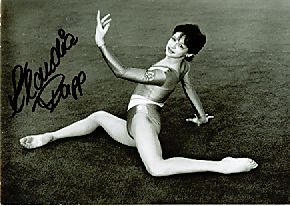

Klaudia Rapp (GDR)
1988 French Intl. V and B Silver Medalist

Medal Total
World Championships: 1 Bronze
Competition Results
1985
GDR Spartakiade (12-year-olds): 1st AA, 2nd V, 2nd UB, 2nd B, 3rd FX
1986
Jr. European Championships: 9th AA, 6th B, 8th UB
Jr. GDR-USSR Dual Meet: 9th AA
1987
GDR Championships: 3rd AA
GDR-NOR-SWE Meet: 1st AA
World Championships: 3rd Team, 7th B
1988
French International: 7th AA, 2nd V, 2nd B
This page was created on September
02, 2006.
© Gymn Forum